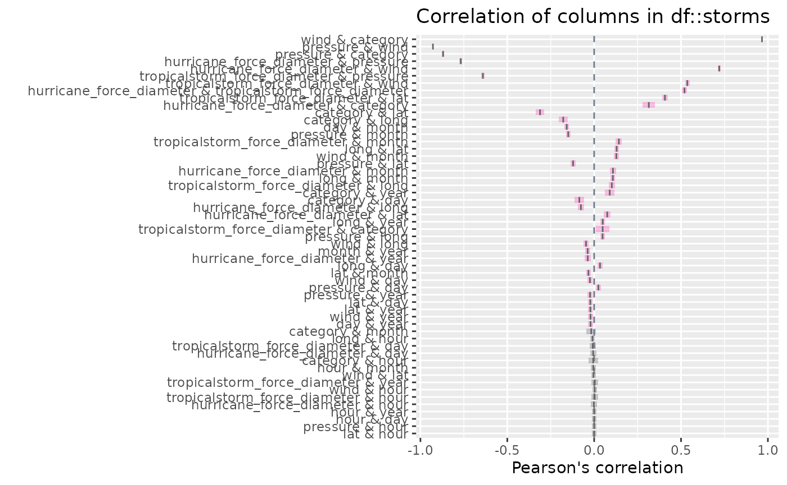
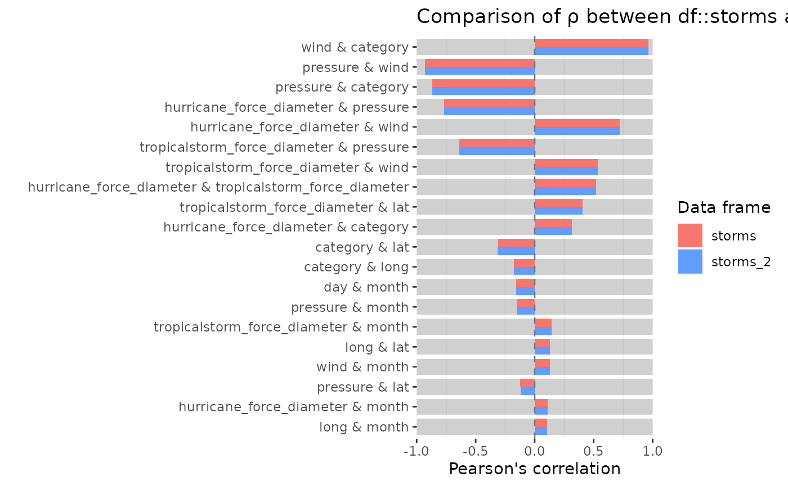

Correlation diagnostics for numeric columns
Source:vignettes/pkgdown/inspect_cor_examples.Rmd
inspect_cor_examples.RmdIllustrative data: starwars
The examples below make use of the starwars and
storms data from the dplyr package
For illustrating comparisons of dataframes, use the
starwars data and produce two new dataframes
star_1 and star_2 that randomly sample the
rows of the original and drop a couple of columns.
inspect_cor() for a single dataframe
inspect_cor() returns a tibble containing Pearson’s
correlation coefficient, confidence intervals and
-values
for pairs of numeric columns . The function combines the functionality
of cor() and cor.test() in a more convenient
wrapper.
library(inspectdf)
inspect_cor(storms)## # A tibble: 55 × 7
## col_1 col_2 corr p_value lower upper pcnt_nna
## <chr> <chr> <dbl> <dbl> <dbl> <dbl> <dbl>
## 1 wind category 0.966 0 0.964 0.968 24.5
## 2 pressure wind -0.928 0 -0.930 -0.926 100
## 3 pressure category -0.870 0 -0.876 -0.863 24.5
## 4 hurricane_force_diameter pressure -0.768 0 -0.775 -0.760 54.2
## 5 hurricane_force_diameter wind 0.720 0 0.711 0.729 54.2
## 6 tropicalstorm_force_diameter pressure -0.641 0 -0.651 -0.629 54.2
## 7 tropicalstorm_force_diameter wind 0.536 0 0.523 0.549 54.2
## 8 hurricane_force_diameter tropical… 0.520 0 0.506 0.533 54.2
## 9 tropicalstorm_force_diameter lat 0.407 0 0.392 0.423 54.2
## 10 hurricane_force_diameter category 0.315 5.59e-55 0.279 0.350 11.9
## # ℹ 45 more rowsA plot showing point estimate and confidence intervals is printed
when using the show_plot() function. Note that intervals
that straddle the null value of 0 are shown in gray:
inspect_cor(storms) %>% show_plot()
Notes:
- The tibble is sorted in descending order of the absolute coefficient .
-
inspect_cordrops missing values prior to calculation of each correlation coefficient.
- The
p_valueis associated with the null hypothesis .
inspect_cor() for two dataframes
When a second dataframe is provided, inspect_cor()
returns a tibble that compares correlation coefficients of the first
dataframe to those in the second. The p_value column
contains a measure of evidence for whether the two correlation
coefficients are equal or not.
inspect_cor(storms, storms[-c(1:200), ])## # A tibble: 55 × 5
## col_1 col_2 corr_1 corr_2 p_value
## <chr> <chr> <dbl> <dbl> <dbl>
## 1 wind category 0.966 0.966 0.869
## 2 pressure wind -0.928 -0.928 0.888
## 3 pressure category -0.870 -0.870 0.913
## 4 hurricane_force_diameter pressure -0.768 -0.768 1
## 5 hurricane_force_diameter wind 0.720 0.720 1
## 6 tropicalstorm_force_diameter pressure -0.641 -0.641 1
## 7 tropicalstorm_force_diameter wind 0.536 0.536 1
## 8 hurricane_force_diameter tropicalstorm_force_diame… 0.520 0.520 1
## 9 tropicalstorm_force_diameter lat 0.407 0.407 1
## 10 hurricane_force_diameter category 0.315 0.315 1
## # ℹ 45 more rowsTo plot the comparison of the top 20 correlation coefficients:

Notes:
- Smaller
p_valueindicates stronger evidence against the null hypothesis and an indication that the true correlation coefficients differ. - The visualisation illustrates the significance of the difference
using a coloured bar underlay. Coloured bars indicate evidence of
inequality of correlations, while gray bars indicate equality.
- For a pair of features, if either coefficient is
NA, the comparison is omitted from the visualisation. - The significance level can be specified using the
alphaargument toinspect_cor(). The default isalpha = 0.05.